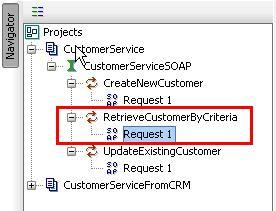
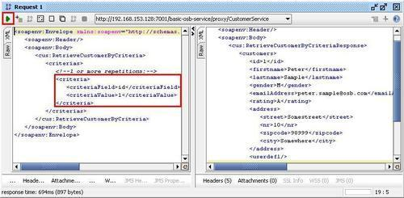

In the previous recipe, we used the OSB console for testing the proxy service. This is ok to just quickly see, if the service is working. But for automatic and repeatable tests, the OSB console is not the right tool.
One advantage of using standards such as the web service standard and the SOAP-based web services is the fact that we can mix and match products from different vendors. The web service standards are vendor-neutral.
Especially for testing web services, there exists a lot of specialized products from different vendors. soapUI is such a specialized tool, which offers both a free as well as a pro version. The free version supports the testing web services with a lot of convenient functionalities. In this recipe, we will show how to test our simple proxy service through soapUI.
To perform this recipe, soapUI needs to be downloaded and installed. We can get it from here: http://www.soapui.org.
In order to test the service from soapUI, we need to know the WSDL URL of the deployed proxy service. The URL is constructed by the OSB at deployment time, based on the location of the OSB server (http://[OSBServer]:[Port]) and the endpoint URI specified in the proxy service (that is, /basic-osb-service/proxy/CustomerService). We need to concatenate the two and add the suffix ?wsdl to get the WSDL URL of the OSB proxy service:
http://localhost:7001/basic-osb-service/proxy/CustomerService?wsdl.
In soapUI, perform the following steps:
http://localhost:7001/basic-osb-service/proxy/CustomerService?wsdl) into the Initial WSDL/WADL field. CustomerService into the Project Name field.SoapUI will analyze the WSDL and creates a project with some initial requests for all operations defined by the WSDL. Still in soapUI, perform the following steps:


Thanks to the standardization through web services, a tool such as soapUI can create the right requests for a service just by analyzing the provided WSDL of the service. SoapUI creates requests for each operation of the service. These requests are persisted in the soapUI project and they can be combined into a test suite. This allows them to be automatically executed, that is, they can be used together with continuous integration.
SoapUI is very powerful and it's worth checking the online documentation available on their website (http://www.soapui.org). In any real-live project work, we suggest you to look at the pro version as well. It simplifies a lot of the service testing even further.
In soapUI, perform the following steps to validate the response from the proxy service against the XML schema in the WSDL:
SoapUI supports more than one request per operation, so that a request can be created for each test case to be executed. It's recommended to properly name the different requests in order to be able to identify them later and to clearly indicate the case tested by a given request.
To rename a request, just right-click on the request and select Rename.
An existing request can also be cloned. This reduces the amount of work necessary to correctly set up all the information in the request message. To create a copy of a request, right-click on the request and select Clone Request.
To create a new request from scratch, right-click on the operation and select New request.
To learn more about soapUI check their website: http://www.soapui.org/. There is also a pro version available, which has a lot more interesting features, a lot of them simplifying the use of soapUI for web service testing.